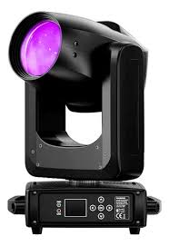

VENETIAN PRO
Inicio
Iluminación
Sonido
Efectos especiales
Accesorios
Distribuidores
VT-M260

Beam 260 W profesional con doble prisma, rueda de gobos y gran alcance para shows en vivo.
Potencia: 260 W
Control: DMX 16 canales
Prisma: doble superpuesto
Modos: DMX, automático, sonido